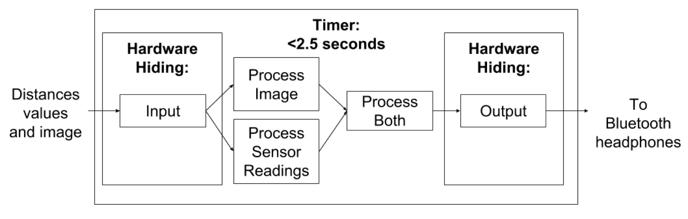
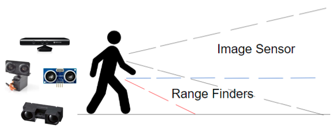
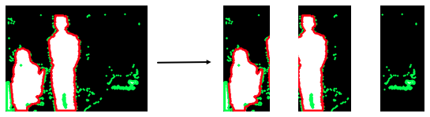

ForSight is a proof-of-concept wearable prototype that is designed to be worn by visually impaired patients in an indoor environment for navigation.
The team is made up of seven graduating students, three software major and four mechatronics major.
The project was made possible thanks to the McPERG (McMaster Pediatric Eye Research Group) led by Dr. Kourosh Sabri, Grace Lee, Crystal Chan and Nida Malik.
The system consists of various components, range detection is done using ultrasonic sensors and infrared sensors, image is captured using Microsoft Kinect, and the information are processed on an Arduino and a Raspberry Pi. Communication to the user is established through Bluetooth bone conduction headphones, and processed information of the available path is continuous relayed to the user.
The network of sensors is shown in the diagram below. There are three ultrasonic sensors on the belt level, one stationary sensor in the middle to detect distance to obstacles directly in front, two rotating ultrasonic sensors are placed on each side to accurately detect objects on the side (this would eliminate false readings due to unwanted reflections of ultrasonic signal). An infrared sensor is also placed on the belt level, pointing downwards at 45-degree angle, to detect change in elevation (such as stairs and tripping hazards). A Microsoft Kinect is placed on the chest, and it is used for detecting hanging objects. It is also used for redundancy check, as it provides a bigger picture of the environment, both vertically and horizontally.
The data retrieved by the range sensors are process on an Arduino, which is then passed onto a Raspberry Pi through Bluetooth. The Raspberry Pi also gathers and processes the information from the Microsoft Kinect, which provides a depth image using its infrared emitter and depth camera. The image is divided into three pieces and are processed in parallel (shown below).
The processed information would then be relayed to the user through bone conduction headphones. The video below shows a demonstration of the prototype, with the right side being first person view (the audio is played through a speaker for the purpose of demonstration)